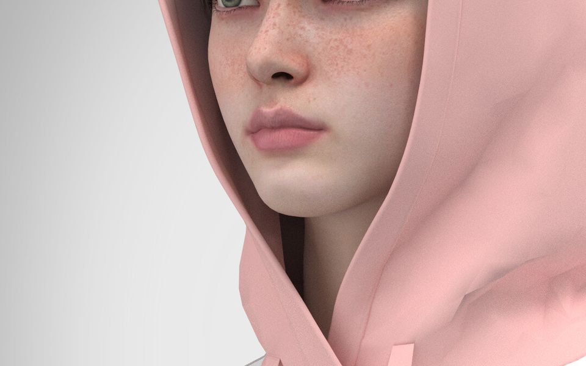
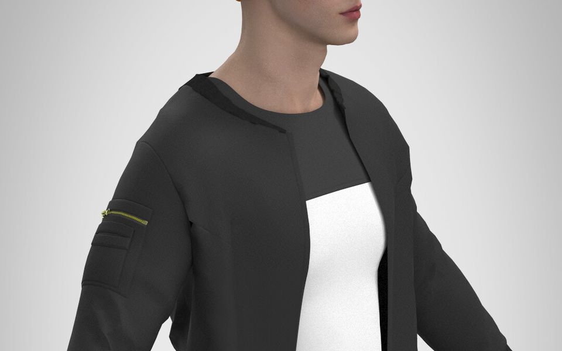
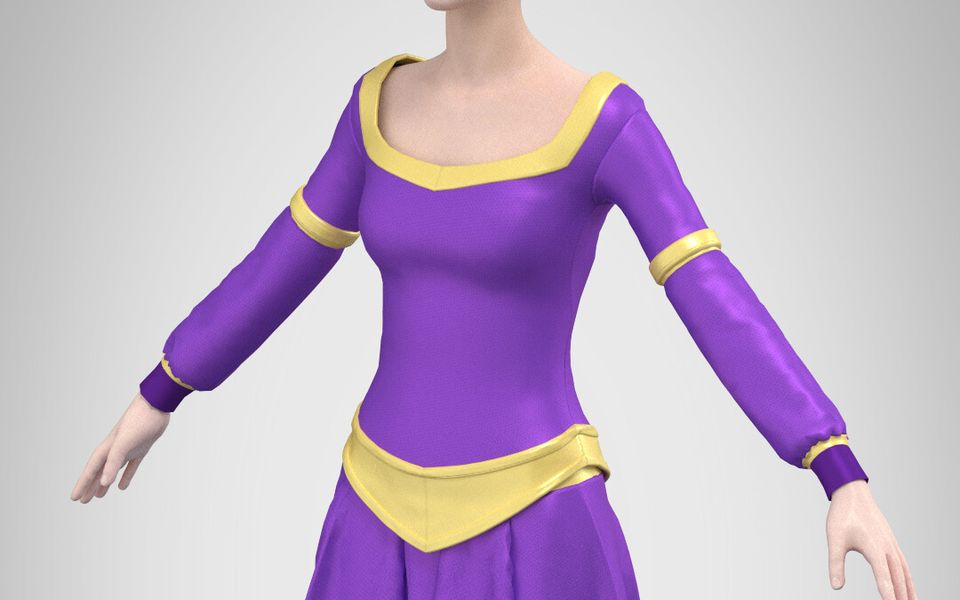

CLO 3D Fashion
Garments designed pattern by pattern and simulated in CLO 3D.

3D Fashion · CLO 3D
CLO 3D: Streetwear Set
Jacket, trousers and tee designed as a set, with fabric simulation in CLO 3D.

3D Fashion · CLO 3D
CLO 3D: Medieval Gown
A long medieval-style gown with sleeves and trims, simulated in CLO 3D.

3D Fashion · CLO 3D
CLO 3D: Frieren Outfit
A character outfit inspired by Frieren, built pattern by pattern in CLO 3D.